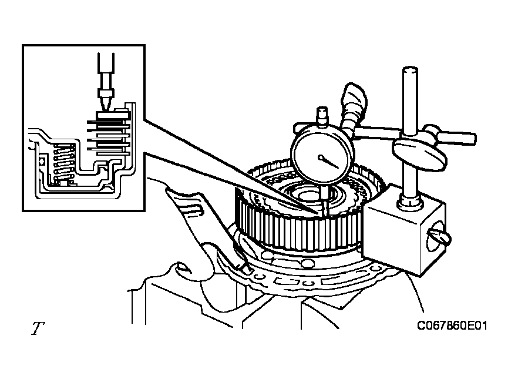

Input Shaft: Reassembly
WARNING: This page is about a different variant/trim than selected.
- INSTALL INPUT SHAFT OIL SEAL RING
- Coat a new oil seal ring with ATF, and install it to the input shaft.
- INSTALL FORWARD CLUTCH PISTON O-RING
- Coat a new O-ring with ATF, and install it to the forward clutch piston.
- INSTALL FORWARD CLUTCH PISTON
- Install the forward clutch piston to the input shaft.NOTE: Be careful not to damage the O-ring.
- Install the forward clutch piston to the input shaft.
- INSTALL FORWARD CLUTCH RETURN SPRING SUB-ASSEMBLY
- Install the clutch balancer and return spring to the input shaft.
- Using SST, a press and snap ring pliers, install the snap ring to the forward clutch return spring.
SST 09320-89010
- INSTALL FRONT CLUTCH CLUTCH DISC
- Install the 4 plates, 4 discs and flange.
- Using a screwdriver, install the snap ring.
- INSPECT PACK CLEARANCE OF FORWARD CLUTCH
- Using a dial indicator, measure the pack clearance while applying and releasing compressed air (392 kPa, 4.0 kgf/cm2
, 57 psi).
Standard pack clearance: 1.406 to 1.806 mm (0.05535 to 0.07110 in.)
If the pack clearance is less than the limit, parts may have been assembled incorrectly. Check and reassemble.

Courtesy of © TOYOTA, LICENSE AGREEMENT TMS1002If the clearance is non-standard, select another flange.
Standard flange thickness
STANDARD FLANGE THICKNESS SPECIFICATIONSNo. Thickness No. Thickness - 3.00 mm (0.1181 in.) 2 3.40 mm (0.1339 in.) 1 3.20 mm (0.1260 in.) 3 3.60 mm (0.1417 in.)
- Using a dial indicator, measure the pack clearance while applying and releasing compressed air (392 kPa, 4.0 kgf/cm2
, 57 psi).